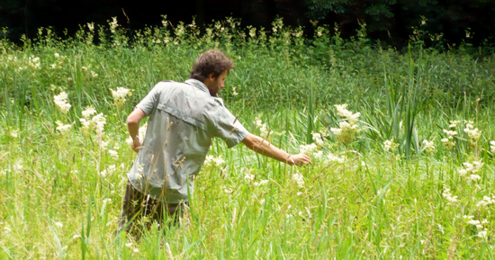

Heeft de keuken mij dichter bij de natuur gebracht of is het omgekeerd? Zo ver ik me kan herinneren, heb ik me altijd al geroepen gevoeld om hier en daar een bosje marjolein, wat takjes bonenkruid of wat wilde tijm te plukken. Deze interesse bewoog mij ertoe me verschillende kookstijlen eigen te maken en een opleiding als natuurgids te volgen.
Toch ben ik geen gediplomeerde bioloog of kok. Na het middelbaar onderwijs (Latijn-wetenschappen) behaalde ik een licentie in de journalistiek. Ondertussen breidde mijn bibliotheek zich verder uit met kookboeken en natuurgidsen. Ik heb dus al mijn kennis in de praktijk vergaard, achter het fornuis en op het veld met een verrekijker en een vergrootglas.
Men zou dus kunnen stellen dat de wilde keuken een beetje in mijn vingers zit, en vooral in mijn smaakpapillen! Ik beleef nergens meer plezier aan dan aan het ontdekken en bereiden van een eetbare plant die ik nog niet kende. Hoe vaak moet mijn vriendin niet op me wachten tijdens een trektocht in de bergen, wanneer ik mijn rugzak vul met wilde planten. Haar ongemak wordt echter ruimschoots gecompenseerd wanneer ze de planten tijdens het avondmaal krijgt voorgeschoteld. Ik kreeg eerder al de kans om groepen tijdens een natuurwandeling te begeleiden en om zelfs een lezing te geven over dit onderwerp.
Maar mijn voorliefde voor de natuur en de keuken houdt niet op bij wilde planten. Vogels, insecten, bossen en biotopen zijn onlosmakelijk met elkaar verbonden. De natuurkunde en de bescherming van het milieu zijn dan ook mijn stokpaardjes. Naast een aantal kleine inspanningen in het dagelijkse leven komt mijn ecologische bewustzijn vooral tot uiting in de keuken. De wilde keuken, biologisch of vegetarisch, is onlosmakelijk verbonden met een ecologisch verantwoorde levensstijl. Ik hoop dat ik u via deze website enkele bruikbare tips kan geven. En hopelijk kan ik u tijdens een pluksessie eens persoonlijk laten kennismaken met de smaak van planten.